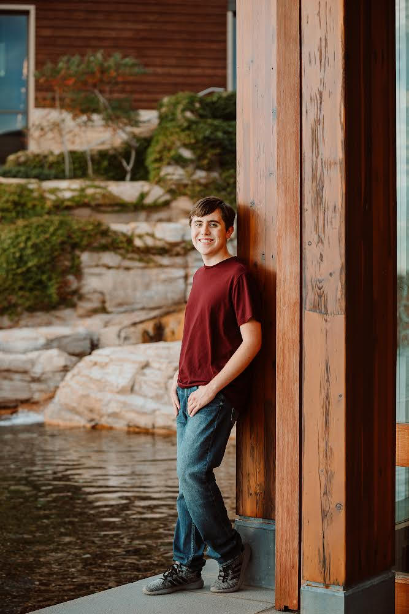

'sup?
My name is Josef Wolf.
I am currently a sophomore at UW-Madison majoring in computer science, data science, and mathematics. I am expected to graduate in the winter of 2026. I am passionate about machine learning, software engineering, and creating new tools, and I am excited to explore how I can apply my skills to solve real-world problems!
During college, I have been gaining experience with Python, Java, C, and R. I have used tools within these such as PyTorch, Flask, and SKLearn.
I am eager to continue growing in the field of computer science, and I am always open to learning more and connecting with others in the industry!
Besides computer science, I am currently interested in playing guitar and boxing, and I have two cats! I also like to take leadership opportunities and have done my best to actively volunteer in my community.